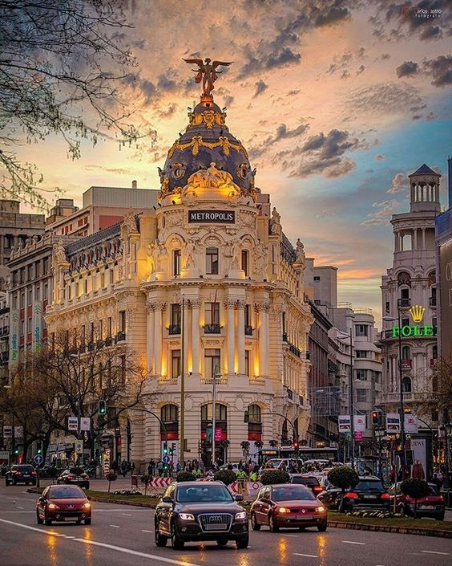
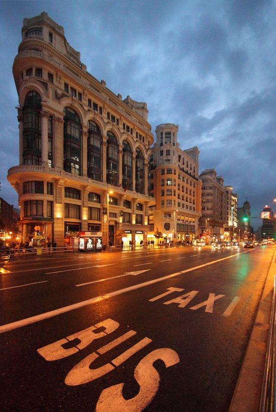

MADRYT
Piąty dzień mojej podróży rozpocząłem w Madrycie. Po intensywnych dniach w innych częściach świata,w tym Los Angeles, czułem się podekscytowany możliwością zwiedzenia tego dynamicznego miasta, które tak wiele ma do zaoferowania.
Spacerując po ulicach stolicy Hiszpanii, poczułem się jak w prawdziwym sercu futbolowego świata. Ale to, co miało miejsce, przekroczyło moje najśmielsze oczekiwania. Gdy przechadzałem się po parku Retiro, nagle zobaczyłem Cristiano Ronaldo. To było niewiarygodne! Opowiedziałem mu o mojej przygodzie z pięcioma miejscami w pięć dni, a jego reakcja była niesamowita. Powiedział, że podziwia mój plan podróży i że chciałby mieć takiego syna, który byłby równie odważny i kreatywny jak ja.
Po tym niesamowitym spotkaniu, Ronaldo zaoferował mi prywatny lot z Madrytu do Polski. Było to coś niesamowitego! Jednak bardzo się śpieszyłem i odrzuciłem ofertę, pomimo że nalegał jak szalony. Pożegnaliśmy się, wymieniając się kontaktami i obiecaliśmy sobie, że wyskoczymy kiedyś na zimne piwko w Lublinie.
Ale wróćmy do Madrytu. Po tym niezapomnianym spotkaniu z Ronaldo miałem jeszcze trochę czasu, aby odkryć więcej uroków tego miasta. Jednym z moich ulubionych miejsc było Muzeum Prado, gdzie mogłem podziwiać niezwykłe dzieła sztuki hiszpańskiej. To miejsce emanowało historią i kulturą, co sprawiło, że poczułem się jeszcze bardziej związany z tym miastem.
Kolejnym niezwykłym miejscem, które odwiedziłem, było Palacio Real, czyli Królewski Pałac. Jego majestatyczna architektura i bogate wnętrza zapierały dech w piersiach. Spacerując po salach pałacowych, miałem wrażenie, że przeniosłem się w czasie do epoki hiszpańskich monarchów.
Podczas mojego pobytu w Madrycie miałem również okazję odwiedzić fascynującą dzielnicę La Latina, znana z wąskich uliczek, kolorowych budynków i przytulnych tapas barów. Spacerując po tych malowniczych uliczkach, próbując lokalnych przysmaków i delektując się atmosferą, poczułem się jak prawdziwy Madrytczyk. To było niezwykłe doświadczenie, które na zawsze pozostanie w mojej pamięci.
Z całym bagażem niezapomnianych wrażeń i nowych przyjaźni z Cristiano Ronaldo opuszczałem Madryt, obiecując sobie, że kiedyś tu wrócę by znowu go spotkać. Czas było wracać do Polski, a ja z dumą mogę powiedzieć, że zrealizowałem swój cel, i pomimo komplikacji i wielu niespodzianek, wszystko się udało. Pomimo że to była niesamowita przygoda, to wszędzie dobrze, ale w domu najlepiej!
Więcej zdjęć z Madrytu znajdziesz w Galerii
Powrót do Strony Głównej